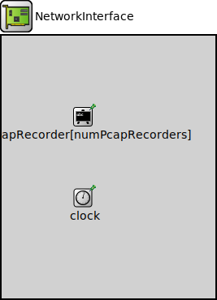

Package: inet.networklayer.common
NetworkInterface
compound moduleThis module serves as the base module for all network interfaces.
Usage diagram
The following diagram shows usage relationships between types. Unresolved types are missing from the diagram.
Inheritance diagram
The following diagram shows inheritance relationships for this type. Unresolved types are missing from the diagram.
Known subclasses
| Name | Type | Description |
|---|---|---|
| AckingWirelessInterface | compound module |
This module implements a highly abstracted wireless network interface (NIC) that uses a trivial MAC protocol. It offers simplicity for scenarios where Layer 1 and 2 effects can be completely ignored, for example testing the basic functionality of a wireless ad-hoc routing protocol. |
| EthernetInterface | compound module |
This module represents an Ethernet network interface. |
| Ieee80211Interface | compound module |
This module implements an IEEE 802.11 network interface. It implements a large subset of the IEEE 802.11 standard, and may use radio models and wireless signal representations of varying levels of detail. It is also extremely configurable, and its component structure makes it easy to experiment with various details of the protocol. |
| Ieee802154NarrowbandInterface | compound module |
This module implements an IEEE 802.15.4 narrowband network interface. |
| Ieee802154UwbIrInterface | compound module |
This module implements an IEEE 802.15.4 UWB-IR network interface. |
| Interface | compound module | (no description) |
| InterfaceService | compound module | (no description) |
| LayeredEthernetInterface | compound module |
This module implements an Ethernet network interface. |
| LoopbackInterface | compound module |
This module implements a loopback network interface. |
| PppInterface | compound module |
This module implements a PPP network interface. |
| TunInterface | compound module |
This module implements a TUN network interface. |
| VirtualInterface | compound module |
This module implements a virtual network interface. |
| WirelessInterface | compound module |
This module implements a generic wireless network interface. |
Parameters
| Name | Type | Default value | Description |
|---|---|---|---|
| displayStringTextFormat | string | "%a (%i)\n%m" | |
| recordPcap | bool | false | |
| numPcapRecorders | int | recordPcap ? 1 : 0 |
Properties
| Name | Value | Description |
|---|---|---|
| networkInterface | ||
| lifecycleSupport | ||
| class | NetworkInterface | |
| display | i=block/ifcard |
Signals
| Name | Type | Unit |
|---|---|---|
| packetDropped | inet::Packet |
Statistics
| Name | Title | Source | Record | Unit | Interpolation Mode |
|---|---|---|---|---|---|
| packetDropInterfaceDown | packet drops: interface down | packetDropReasonIsInterfaceDown(packetDropped) | count, sum(packetBytes), vector(packetBytes) | none | |
| packetDropNoCarrier | packet drops: no carrier | packetDropReasonIsNoCarrier(packetDropped) | count, sum(packetBytes), vector(packetBytes) | none |
Unassigned submodule parameters
| Name | Type | Default value | Description |
|---|---|---|---|
| pcapRecorder.verbose | bool | true |
whether to log packets on the module output |
| pcapRecorder.pcapFile | string | "" |
the PCAP file to be written |
| pcapRecorder.fileFormat | string | "pcapng" | |
| pcapRecorder.snaplen | int | 65535 |
maximum number of bytes to record per packet |
| pcapRecorder.dumpBadFrames | bool | true |
enable dump of frames with hasBitError |
| pcapRecorder.sendingSignalNames | string | "packetSentToLower" |
space-separated list of outbound packet signals to subscribe to |
| pcapRecorder.receivingSignalNames | string | "packetReceivedFromLower" |
space-separated list of inbound packet signals to subscribe to |
| pcapRecorder.dumpProtocols | string | "ethernetmac ppp ieee80211mac" |
space-separated list of protocol names as defined in the Protocol class |
| pcapRecorder.packetFilter | object | "*" |
which packets are considered, matches all packets by default |
| pcapRecorder.helpers | string | "" |
usable PcapRecorder::IHelper helpers for accept packettype and store/convert packet as specified linktype currently available: "inet::AckingMacToEthernetPcapRecorderHelper" |
| pcapRecorder.alwaysFlush | bool | false |
flush the pcapFile after each write to ensure that all packets are captured in case of a crash |
| pcapRecorder.displayStringTextFormat | string | "rec: %n pks" |
Source code
// // This module serves as the base module for all network interfaces. // module NetworkInterface { parameters: string displayStringTextFormat = default("%a (%i)\n%m"); bool recordPcap = default(false); int numPcapRecorders = default(recordPcap ? 1 : 0); pcapRecorder[*].pcapFile = default("results/" + expand("${configname}-") + fullPath() + ".pcap"); **.clockModule = default(exists(clock) ? absPath(".clock") : ""); @networkInterface; @lifecycleSupport; @class(NetworkInterface); @display("i=block/ifcard"); @signal[packetDropped](type=inet::Packet); @statistic[packetDropInterfaceDown](title="packet drops: interface down"; source=packetDropReasonIsInterfaceDown(packetDropped); record=count,sum(packetBytes),vector(packetBytes); interpolationmode=none); @statistic[packetDropNoCarrier](title="packet drops: no carrier"; source=packetDropReasonIsNoCarrier(packetDropped); record=count,sum(packetBytes),vector(packetBytes); interpolationmode=none); submodules: pcapRecorder[numPcapRecorders]: PcapRecorder { parameters: moduleNamePatterns = ".^"; @display("p=100,100;is=s"); } clock: <default("")> like IClock if typename != "" { parameters: @display("p=100,200;is=s"); } }File: src/inet/networklayer/common/NetworkInterface.ned
 This documentation is released under the Creative Commons license
This documentation is released under the Creative Commons license